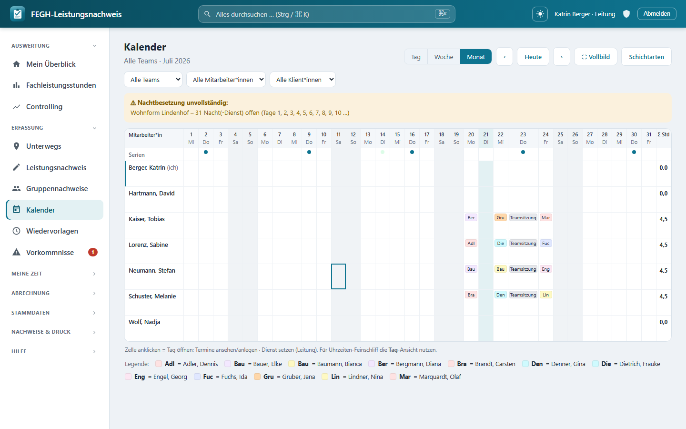

Dienstplan & SOLL/IST-Abgleich¶

Dienstplan mit SOLL/IST-Abgleich und Ruhezeit-Prüfung.
Für stationäre Angebote (Wohnheim, WG, Jugendhilfe) plant die Leitung die Dienste – wer an welchem Tag welche Schicht übernimmt. Der Dienstplan ist das SOLL: die geplante Besetzung. Das IST bleibt die erfasste Arbeitszeit. Beides läuft in derselben App zusammen, aber an zwei Stellen: geplant wird auf dem Kalender-Planungsbrett (Monatsansicht), verglichen wird im SOLL/IST-Abgleich. Diese Seite beschreibt beide Wege, die Schichtarten als Stammdaten, den Nachtbesetzungs-Check und die ArbZG-Ruhezeit-Prüfung.
Wer plant und wer sieht das?
Dienste planen und den Abgleich sehen dürfen nur Leitungen – geprüft über services.ist_leitung. Alles ist team-gescopt: Sichtbar und planbar sind ausschließlich Mitarbeiterinnen der eigenen (geleiteten) Teams. Admin und Verwaltung* haben keinen Zugriff auf das klientennahe Planungsbrett. Der direkte Aufruf ohne Leitungsrolle wird serverseitig mit einer Zugriffssperre abgewiesen.
Dienste planen (SOLL) im Planungsbrett¶
Es gibt kein separates Dienstplan-Menü mehr – Kalender und Dienstplan sind dasselbe Planungsbrett. Die Dienstplanung passiert in der Monatsansicht des Kalenders (Matrix aus Mitarbeiter*innen × Tagen). Alte Lesezeichen auf den früheren Dienstplan leiten automatisch auf die Monatsmatrix um.
So setzt du als Leitung einen Dienst:
- Kalender öffnen, auf Monat stellen, ggf. Team/Monat/Jahr wählen.
- Eine Tages-Zelle der gewünschten Mitarbeiterin anklicken – die schwebende Tages-Card* öffnet sich.
- Existieren Schichtarten, erscheint dort die Sektion Dienst (stationäre Planung). Ein Schicht-Kürzel anklicken setzt den Dienst.
- Optional ein Angebot (Standort/Wohngruppe) wählen, dem der Dienst zugeordnet wird.
- Dienst entfernen löscht den Dienst des Tages wieder.
Ein Dienst je Mitarbeiter*in und Tag
Pro Mitarbeiterin und Tag gilt genau ein* Dienst im Raster – setzt du eine andere Schichtart auf denselben Tag, ersetzt sie die vorhandene. Ein leeres Schicht-Kürzel (kein Dienst) löscht den Tageseintrag.
Jeder Dienst trägt folgende Felder:
| Feld | Pflicht | Bedeutung |
|---|---|---|
| Mitarbeiter*in | ja | Zeile im Raster; nur aus den geleiteten Teams |
| Datum | ja | Tag im Raster |
| Schichtart | ja | die geplante Schicht (Kürzel/Farbe), liefert die SOLL-Stunden |
| Angebot | nein | Standort/Wohngruppe; zählt für den Nachtbesetzungs-Check |
| Notiz | nein | Kurztext (max. 120 Zeichen) |
Schichtarten als Stammdaten¶
Schichtmodelle sind Stammdaten, keine Programmierung: Die Leitung pflegt sie auf der Seite Schichtarten. Damit lassen sich trägerindividuelle Schichten (Früh-, Spät-, Nachtdienst, geteilte Dienste …) frei anlegen und in Zeiten/Farbe anpassen.
| Feld | Pflicht | Bedeutung |
|---|---|---|
| Name | ja | Klarname der Schicht (z. B. Frühdienst), max. 60 Zeichen |
| Kürzel | nein | max. 3 Zeichen fürs Planraster; leer = die ersten zwei Buchstaben des Namens |
| Beginn | ja | Startuhrzeit (HH:MM) |
| Ende | ja | Enduhrzeit (HH:MM) |
| Farbe | nein | Hex-Farbe des Rasterfelds (Standard #0e7490) |
| Nachtdienst | nein | Häkchen: zählt für die Nachtbesetzungs-Prüfung |
| aktiv | nein | nur aktive Schichtarten sind im Raster wählbar (bei neuen vorbelegt) |
Schichten über Mitternacht
Liegt Ende vor Beginn (z. B. 21:00 → 07:00), erkennt die App die Schicht automatisch als Nachtschicht über Mitternacht. Die Schichtdauer (Grundlage des SOLL-Werts) wird dann korrekt über den Tageswechsel hinweg gerechnet.
Aktiv statt löschen
Eine Schichtart, auf die bereits Dienste verweisen, lässt sich nicht einfach entfernen (der Verweis ist geschützt). Setze sie stattdessen auf inaktiv – bestehende Dienste bleiben erhalten, neue Dienste können sie nicht mehr auswählen.
Nachtbesetzungs-Check¶
Für stationäre Angebote mit Nacht-Erreichbarkeit prüft die App in der Kalender-Monatsansicht, ob jede Nacht des Monats besetzt ist. Geprüft werden nur Angebote, deren Erreichbarkeit auf Nacht-Bereitschaft/-Präsenz oder Tag + Nacht (24h) steht.
Ein Tag gilt als besetzt, wenn dort ein Dienst mit einer als Nachtdienst markierten Schichtart auf dieses Angebot geplant ist. Fehlt an einem Tag der Nachtdienst, erscheint oben ein Warnbanner mit dem betroffenen Angebot, der Anzahl offener Nächte und den ersten betroffenen Tagen.
Nur Leitung, nur wo Nacht-Angebote existieren
Der Check läuft nur, wenn im Team überhaupt Angebote mit Nacht-Erreichbarkeit hinterlegt sind, und ist nur für die Leitung sichtbar. Er ist ein Planungs-Hinweis auf offene Nächte, keine automatische Dienstzuweisung.
SOLL/IST-Abgleich je Mitarbeiter*in¶
Der Dienst-Abgleich (Seite SOLL vs. IST) stellt je Mitarbeiterin und Monat die geplanten Dienste der erfassten Arbeitszeit gegenüber. Oben wählst du Team (nur bei mehreren geleiteten Teams), Monat und Jahr und klickst Anzeigen*.
Die Tabelle zeigt je aktiver Mitarbeiter*in des Teams:
| Spalte | Bedeutung |
|---|---|
| Mitarbeiter*in | Name, Vorname |
| Dienste | Anzahl geplanter Dienste im Monat |
| SOLL (Std) | Summe der Schichtdauern der geplanten Dienste |
| IST (Std) | Summe der erfassten Arbeitszeit (netto, ohne abgelehnte Einträge) |
| Δ | IST − SOLL; positiv grün (Mehrarbeit), negativ rot (Unterdeckung), 0 neutral |
| Ruhezeit-Verstöße | Anzahl unterschrittener Ruhezeiten (⚠), sonst „—" |
Woher SOLL und IST kommen
Der SOLL-Wert kommt aus den geplanten Diensten (Schichtdauer der Schichtart). Der IST-Wert kommt aus der erfassten Arbeitszeit – abgelehnte Einträge zählen nicht mit. Der Dienstplan selbst wird nicht hier, sondern in der Kalender-Monatsansicht gepflegt; diese Seite ist reine Auswertung.
ArbZG-Ruhezeit-Prüfung (11 h / 10 h Pflege)¶
Zusätzlich prüft der Abgleich die Ruhezeit nach § 5 ArbZG: Zwischen zwei aufeinanderfolgenden geplanten Diensten müssen in der Regel 11 Stunden ununterbrochene Ruhe liegen; in Pflege und Betreuung ist eine Verkürzung auf bis zu 10 Stunden zulässig (§ 5 Abs. 2 ArbZG). Die Prüfung läuft über die geplanten Dienst-Zeitfenster und berücksichtigt Schichten, die über Mitternacht laufen.
Wird zwischen zwei Diensten weniger als 11 h Ruhe erreicht, erscheint unter der Tabelle ein Warnkasten pro betroffener Mitarbeiter*in – mit den beiden Diensten (Datum + Schicht-Kürzel) und der tatsächlichen Ruhezeit in Stunden.
Planungs-Hinweis, keine Rechtsprüfung
Die Ruhezeit-Prüfung ist ein Hinweis für die Dienstplanung, keine abschließende arbeitsrechtliche Bewertung. Ob die verkürzte 10-h-Regel im konkreten Angebot greift und ob ein Ausgleich erfolgt, entscheidet die Leitung – die App macht nur auf mögliche Unterschreitungen aufmerksam.
Datensparsamkeit (DSGVO Art. 9)
Sowohl das Planraster als auch der Abgleich arbeiten bewusst mit Kürzeln und Zeiten, nicht mit klientenbezogenen Gesundheitsdaten. Trage in die Dienst-Notiz keine sensiblen Sozial- oder Gesundheitsdaten ein. Alle Auswertungen bleiben auf die eigenen Teams beschränkt.
Für Neugierige: Technik dahinter¶
Nur zur Nachvollziehbarkeit
Diese Abschnitte sind für die Bedienung nicht nötig.
- Views (
nachweis/views_dienstplan.py):dienst_abgleichbaut je aktiverMitarbeiterin des Teams die SOLL/IST-Zeilen (nur Leitung, team-gescopt überservices.teams_fuer).dienst_setzenlegt/ändert/löscht einenDienstje Mitarbeiterin/Tag/Schichtartaus der Tages-Card (@require_POST, leere Schichtart = löschen, sonstupdate_or_create).dienstplanist nur noch ein Redirect auf die Kalender-Monatsmatrix._nacht_lueckenbildet den Nachtbesetzungs-Check überAngebote mitErreichbarkeit.NACHT/TAG_NACHTund den Diensten mitschichtart.ist_nachtdienst.schichtartenpflegt die Stammdaten (Zeit-Parsing%H:%M, Häkchenist_nachtdienst/aktiv). - Service (
nachweis/services.py):dienst_ist_abgleich(mitarbeitende, jahr, monat)summiertSOLLausd.schichtart.dauer_stundenundISTausm.arbeitszeiten(ohneAbwesenheitStatus.ABGELEHNT), berechnetdelta = ist − sollund die Ruhezeit-Verstöße: Es baut die geplanten Dienst-Zeitfenster alsdatetime(Nacht über Mitternacht viatimedelta(days=1)), sortiert sie und meldet jede Lücke< 11Stunden als{"von", "nach", "stunden"}. - Modelle (
nachweis/models.py):Schichtart(nameunique,kuerzel,beginn/ende– Ende ≤ Beginn = über Mitternacht,farbe,ist_nachtdienst,aktiv; Propertydauer_stundenrechnet die Minuten über den Tageswechsel).Dienst(mitarbeiter×datum×schichtartmitUniqueConstraintein_dienst_je_ma_tag_schicht, optionalangebotviaSET_NULL,notiz,schichtartviaPROTECT).Erreichbarkeitliefert die ChoicesNACHT/TAG_NACHTfür den Nachtcheck. - Templates:
nachweis/templates/nachweis/dienst_abgleich.html(Filter Team/Monat/Jahr, Tabelle Dienste/SOLL/IST/Δ/Ruhezeit,.warnboxje Mitarbeiter*in mit den Ruhezeit-Verstößen) undnachweis/templates/nachweis/schichtarten.html(Stammdaten-Liste mit Farb-Chip und Dauer, Formular Name/Kürzel/Beginn/Ende/Farbe/Nachtdienst/aktiv). Das Dienst-Setzen selbst steckt in der Tages-Card vonkalender.html.